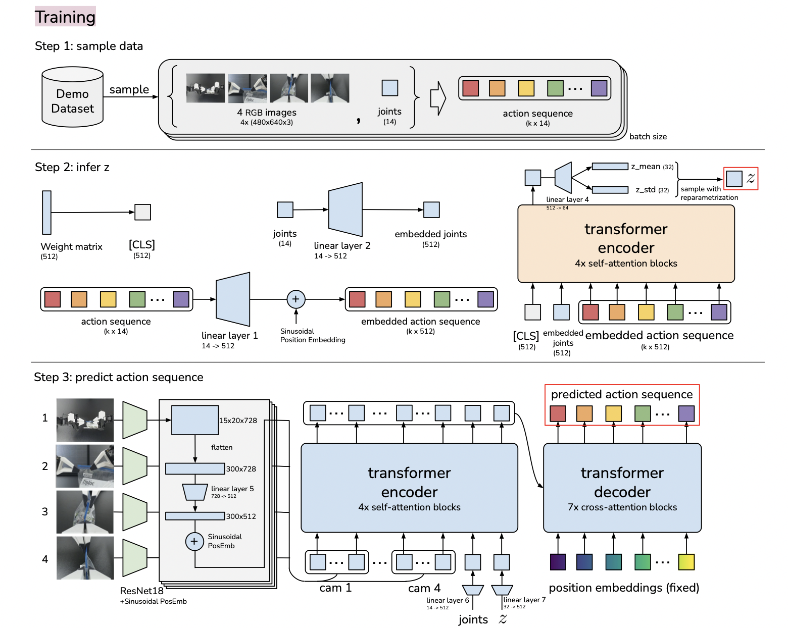

Action Chunking Transformer

Advanced robotics imitation learning project using transformer-based action chunking for fine-grained bimanual manipulation tasks.
Demonstration Video 1: Imitation learning demonstration
Demonstration Video 2: run time using trained model with 34 episodes
Resources
-
Dataset: realsense-black-green-background-lerobot
A comprehensive robotics video dataset for imitation learning, fully compatible with LeRobot and RLDS frameworks. -
Trained Model: imitation-blue-realsense124Combo
Pre-trained model checkpoint with complete configuration files for robotics imitation learning applications.
Network Architecture
The Action Chunking Transformer architecture showing the hierarchical structure for processing sequential action data.
References
-
Learning Fine-Grained Bimanual Manipulation with Low-Cost Hardware
@article{zhao2023learning, title={Learning fine-grained bimanual manipulation with low-cost hardware}, author={Zhao, Tony Z and Kumar, Vikash and Levine, Sergey and Finn, Chelsea}, journal={arXiv preprint arXiv:2304.13705}, year={2023} } -
Project Repository: https://github.com/huggingface/lerobot
Open-source implementation and framework for robotics learning and imitation.